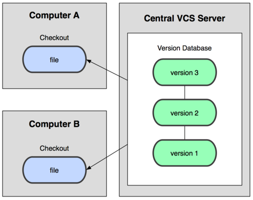
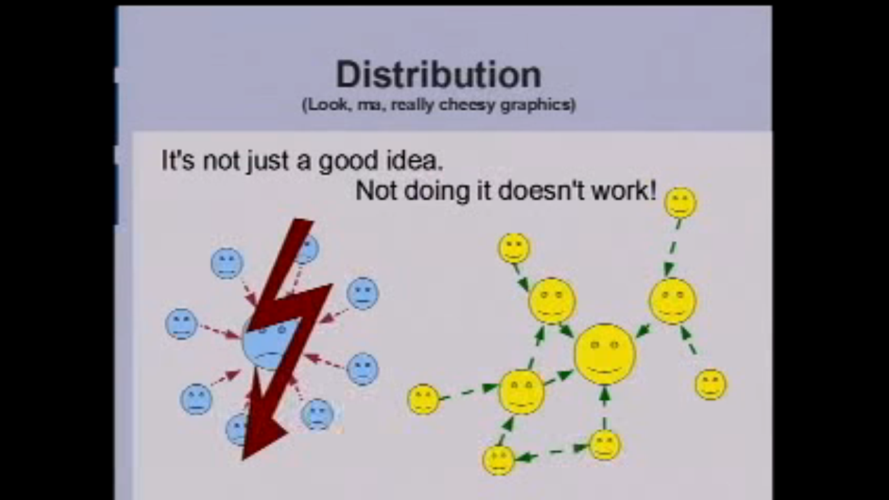
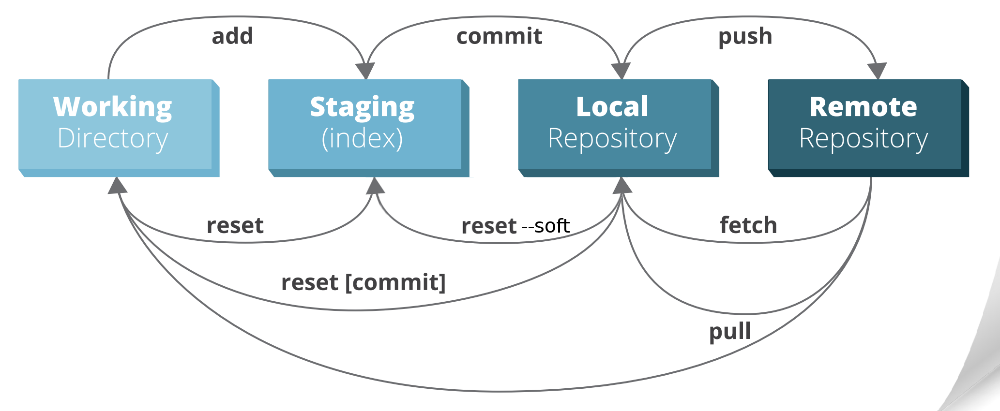
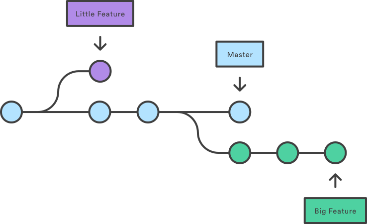
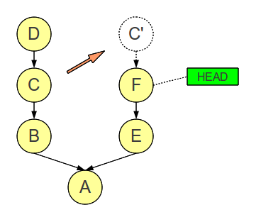
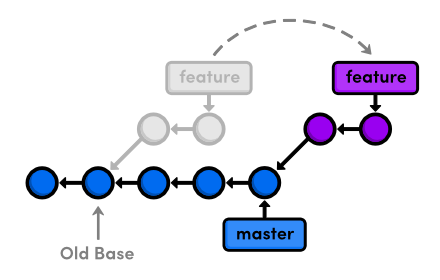
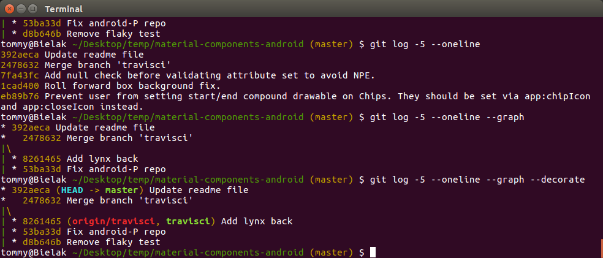
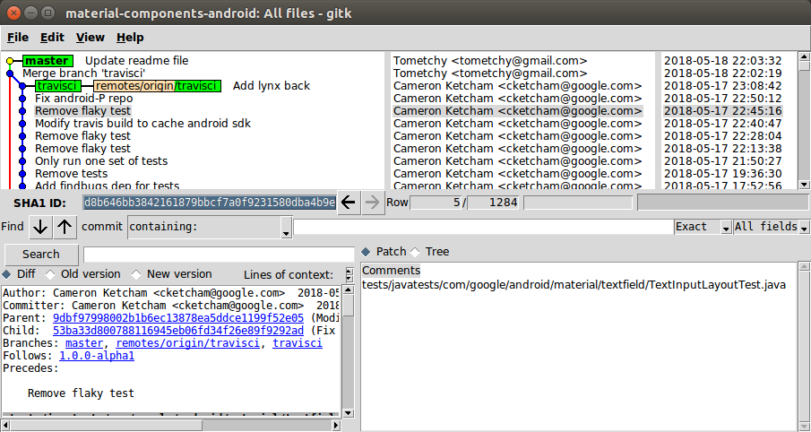

Wprowadzenie do GIT
Krzysztof Morcinek i
Tomasz Rusek
devWarsztaty
19 maja 2018
inspiracja -
github.com/SkillsTemple/git-devWarsztaty
CZYM JEST GIT

Git to w zasadzie baza danych
Git to VCS na który można patrzeć, jak na rozproszoną bazę danych, opartą na streamie snapshotów plikow



Dlaczego GIT jest git
- jest szybki
- jest rozproszony
- ułatwia rozwiązywanie konfliktów
- wspiera nieliniowy development (branche)
- działa offline
- pozwala na pracę nad jakością commitów
- bardzo łatwy do użytku domowego
- jest bezpieczny
Jest bezpieczny - jest wiarygodny
Suma kontrolna każdego commita opiera się na
- Zawartości i nazwach wszystkich plików
- ID parent commit(ów)
- Wiadomości (opisie) commita
- Autorze i/lub commiterze
(np. po uszkodzeniu dysku albo próbie sabotażu)
Analogicznie wiarygodne są przelewy w bitcoin
Jak działa git
Git w podstawowym scenariuszu jedynie dodaje kolejne snapshoty plików


W przeciwieństwie do kryptowalut...
w swojej 'instacji bazy' (na swoim komputerze) możesz zmieniać istniejące snapshoty (commity)
ALE!
tylko pod warunkiem, że jeszcze ich nie opublikowałeś innym bazom
Git nie śledzi plików
W przeciwieństwie do niektórych VCS,
git nie śledzi plików, wyłącznie ich zawartość
Head
HEAD to referencja do obecnie zcheckoutowanego commita, zazwyczaj będącego ostatnim commitem w branchu
- HEAD - ostatni commit (pierwszy od końca) - np. ed8ab42[...]
- HEAD~1 - przedostatni commit - np. daa6b92[...]
- HEAD^ - przedostatni commit - np. a6bc32b[...]
- HEAD~3 - czwarty od końca commit - np. 7cb16f7[...]
- HEAD^^^ - czwarty od końca commit - np. 343ebb3[...]
Working directory,staging area, commit
Twoje pliki - absolutnie każdy plik który utworzysz/edytujesz/usuniesz,
zawsze jest w którymś z 3 "obszarów" gita
- obszarze roboczym (working directory)
- 'indeksie' (staged files)
- repozytorium (commicie dodanym do historii)
Obszar roboczy
Obszar roboczy (working directory) to obszar w którym jest praca którą wykonałeś, ale o której jeszcze nie powiedziałeś nic gitowi
- nowe pliki których wcześniej nie commitowałeś
- zmiany w plikach które wcześniej commitowałeś
- zmiana nazwy pliku lub jego usunięcie
Git nie wie nic o Twojej pracy w working directory, uważaj żeby jej nie stracić dopóki mu o niej nie powiesz
Zmiany w working directory odnoszą się do staging area, a jeśli danego pliku nie ma w staging area, wówczas bezpośrednio do obecnej wersji w lokalnym repozytorium
Index (staged files)
Staging area to obszar w którym przygotowujesz sobie które zmiany zostaną zaccomitowane, czyli doddane do Twojego lokalnego repozytoriumPo zastagowaniu zmiany, czyli przygotowaniu jej do commita, dalej można plik edytować, wówczas zmiany w working directory pokazywane są względem zastagowanej wersji
Co więcej, od razu można wybrać żeby zastagować tylko część zmian Dla przykładu na dole pliku zaczęliśmy dopisywać nowy kod, a w środku pliku zobaczyliśmy literówkę w tekście. Wówczas można od razu nieprzerywając pracy na dole pliku, zastagować jedynie poprawienie literówki i dodać commita "Fix typo in module A".
Comimt
Snapshot wszystkich plików w projekcie, posiadający identyfikator SHA-1

Flow
Przykład stagowania (git add)
git-work-example.png
Przykładowe flow
- Demo w SourceTree, dodawanie poszczególnych chunków
- Demo z konsoli i tworzeniem plików w eksplorerze
Ćwiczenie
- Utwórz repozytorium - git init
- Stwórz plik index.txt z zawartością "Hello World"
- Dodaj plik do repozytorium (git add, git commit)
- Zmień treść pliku na "Witaj świecie" NASTĘPNIE...
Edytowanie istniejących zmian
- Przed opublikowaniem innym
- Po opublikowaniu innym
Edycja 'ostatnich' commitów przed opublikowaniem
- git reset
- git reset --mixed
- git reset --soft
- git reset --hard
- commit --amend
- rebase --interactive
Edycja 'ostatnich' commitów po opublikowaniu
git revertnp:
- git revert HEAD
- git revert HEAD~4
- git revert 6e5av3a
Demo rebase --interactive
- git rebase --interactive HEAD~4
- git rebase -i develop
Ćwiczenie 1 (opis w repo)
- git clone https://github.com/SkillsTemple/git-devWarsztaty-reset-revert exercise-2
- cd exercise-2
- git rebase --interactive
Ćwiczenie 2 - 'zabawa' z resetowaniem commitów i obserwacja 'co się dzieje'
- git clone https://github.com/material-components/material-components-android.git
- git reset --soft/mixed/hard HEAD~LICZBA_COMMITÓW
Branche

cherry-pick
Commity między branchami można przekładać

Merge

Rebase

Merge vs rebase

- Ćwiczenie pierwsze - zrób merge lub rebase
- Ćwiczenie drugie - rozwiąż konflikty
Rebase to świetne narzędzie...
Rebase to świetne narzędzie, poprawianie czytelności historii bardzo ułatatwia przeglądanie repozytorium.
Ale trzeba być ostrożnym. Czasami warto przerwać rebasowanie i jednak zrobić zwykłego merge.
link do fajnego artykułu tłumaczącego trudności które można napotkać
Przeglądanie historii
- git log
- gitk
git log for example with graph

git log for example in one line

git log for example showing stats and patch

gitk

Pushowanie
&
pullowanie zmian
Synchronizacja repozytoriów (np. lokalnego z wersją na GitHubie) odbywa się za pomocą 'wypychania' i 'ciągnięcia' commitów
- git push
-
git pull
- git fetch
- git merge
Pull z rebase
Często dobrą opcją jest zastosowanie komendy która od razu za nas zrebasuje commity
git pull --rebase
git reflog

Forki & Pull requesty

Pytania? - Pull requesty!
Przydatne narzędzia GitHuba związane z gitem
- gist
- GitHub Pages
Linki
- Pro Git book (Scott Chacon, Ben Straub)
- Atlassian Tutorials
- Learn git branching
- Visualise git with D3
- Successful git branching model - Git flow
- Oh shit, git!
- Git cheatsheet
- How to undo (almost) anything with git
- How to Write a Git Commit Message
- GIT Illustrated Cheatsheet
- Artykuł na co uważać przy rebase